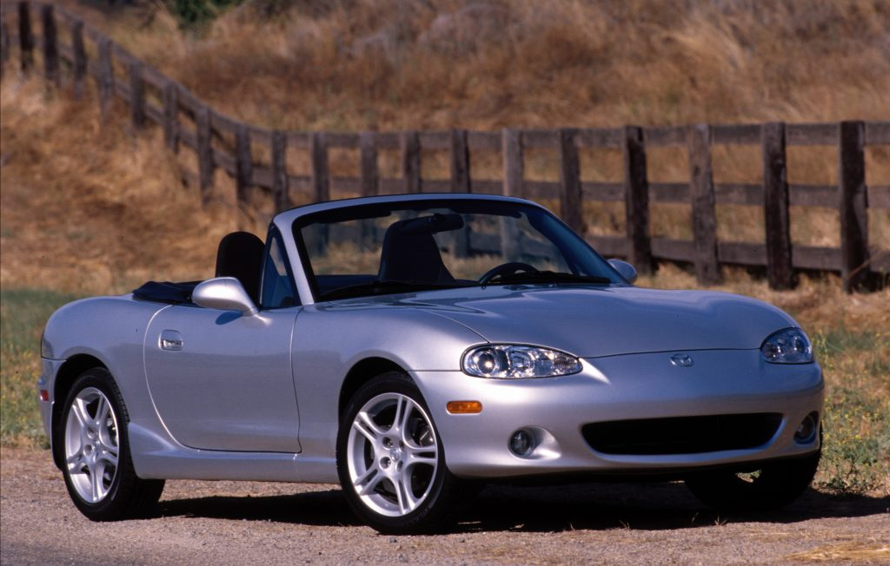
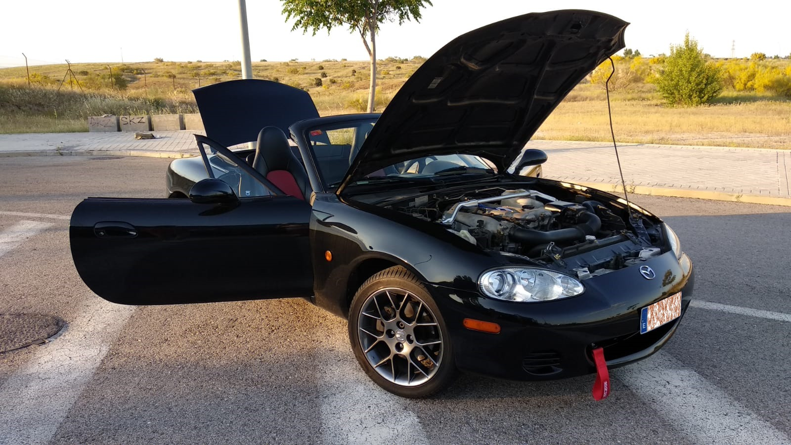
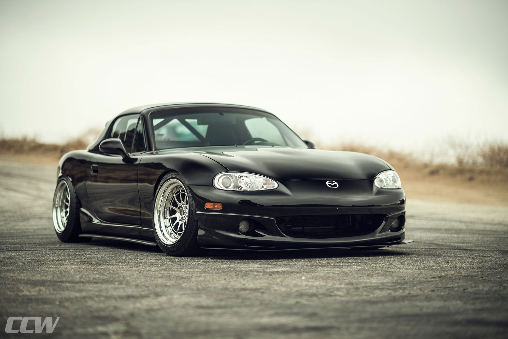

MAZDATA
NB (1998-2005)
El MX-5 NB (También conocido como MK2) salio a la venta en 1998.
Motorizaciones:
1.6L 110cv (1998-2005)
1.8L 140cv (1998-2001)
1.8L 146cv (2001-2005)
1.8L Mazdaspeed 178cv (2003-2005, no vendido en España)
Versiones:
NB1
(1998-2001)
NB2
(2001-2005)
Con la producción del Na finalizada en 1997 (aunque se matricularon unidades posteriormente) se ponía fin a los faros escamoteables. Llegaba el Mx-5 Nb, la segunda generación, y lo hacía cargando su diseño de nuevas curvas, de nervios más marcados, pero sin cambios drásticos en su diseño más allá de la necesaria desaparición de las ópticas del Na debido a las nuevas normativas frente a atropellos.

Al igual que con su exterior, el interior del MX-5 Nb pasa a lucir un diseño más redondeado, algo que ya se comenzó a apreciar en las últimas unidades del Na, compartiendo de hecho entre estas últimas unidades y el nuevo Nb un diseño bastante parejo de salpicadero. La consola central y el puente central siguen también un esquema muy muy parecido al conocido en el Na pero debidamente modernizado.

Con una parte ciclo muy semejante a la del Na , el Nb se ofreció desde el comienzo con dos alternativas mecánicas. Por un lado un 1.6 de 110 caballos y 134 Nm de par y por otro el 1.8 de 140 caballos y 161 Nm de par, mecánica que más tarde, en 2001, llegaría a los 146 caballos de la mano del Nb2, aumentando también su par hasta los 168 Nm.
Se superaba la barrera de los 200 km/h de velocidad máxima, pero los valores de aceleración del 140 caballos seguían quedando bastante próximos a los del Na de 115 caballos, con sólo unas pocas décimas a favor del Nb, algo comprensible si tenemos en cuenta el aumento de peso, llegando ahora a los 1.100 kg. Por supuesto en el caso de las versiones Mazdaspeed se rebajaba considerablemente, llegando a un 0 a 100 km/h de algo más de 6 segundos en estas variantes frente a los más de 8 segundos que empleaban las alternativas convencionales de 140 caballos.
La transmisión en los 1.6 era de 5 velocidades mientras que en los 1.8 podía ser de 5 o 6 velocidades en el Nb y de sólo 6 velocidades en el Nb2.

Las cotas del Nb eran bastante próximas a las del Na. Contaba con una longitud de 3.975 mm, una anchura de 1.680 mm, una altura de 1.225 mm y una distancia entre ejes de 2.265 mm.
Además, la capota del Nb contaba ya con cristal en su parte posterior en lugar del plástico de la capota del Na, aunque actualmente diversas empresas de la industria auxiliar ofrecen capotas válidas para el Na con cristal trasero.
Con el antes mencionado Nb2 se introdujeron nuevos, aunque leves matices estéticos. Aparecían nuevos paragolpes, llantas, asientos… y se introducían mejores frenos (algo de lo que ha pecado siempre el Miata), refuerzos del chasis y nuevas suspensiones.
Siguiendo con esa política de versiones no faltó en el caso del Nb una alternativa de techo fijo convencional, el Roadster Coupé, como tampoco las versiones sobrealimentadas, destacando la versión Mazdaspeed, que llegaba a los 180 caballos introduciendo además cambios estéticos y mejoras en la parte ciclo.